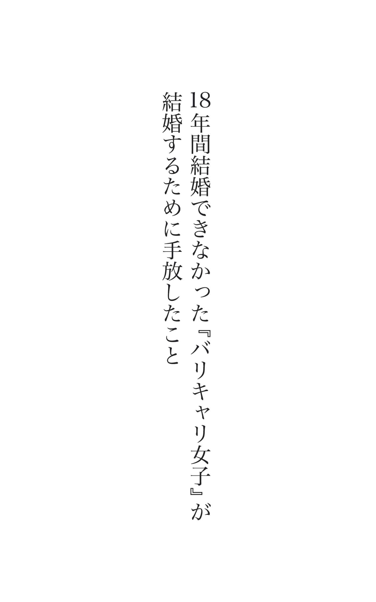
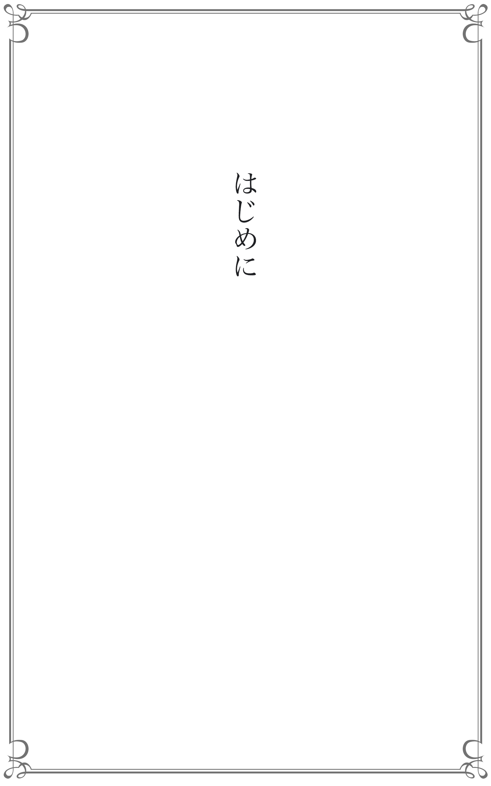
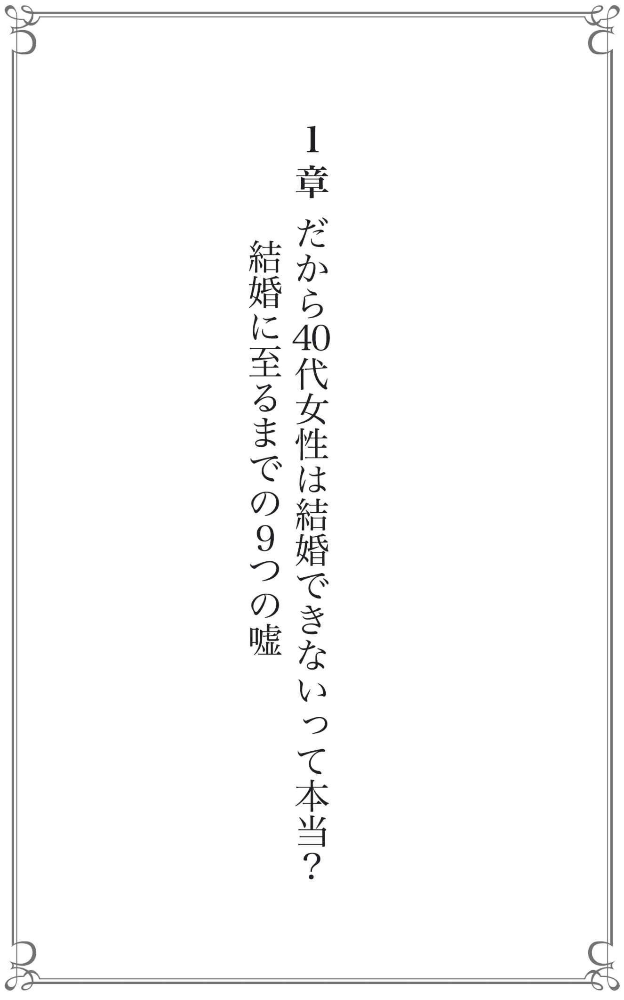
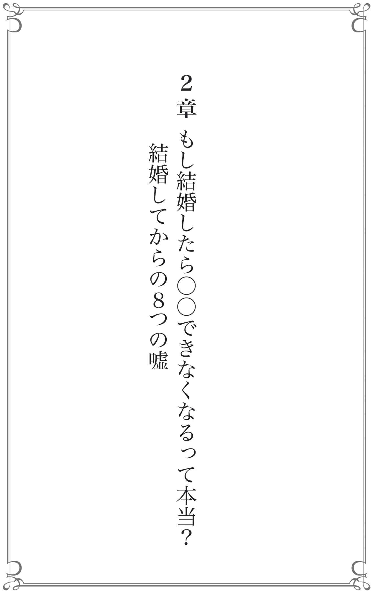
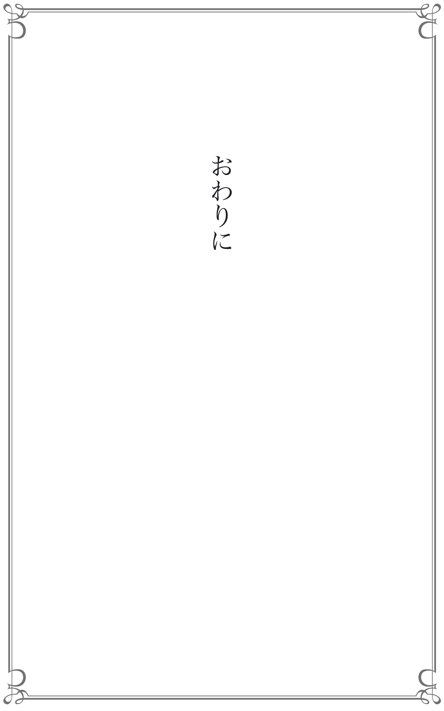

| 43歳で結婚してわかった17の嘘と真実: 18年間結婚できなかったバリキャリ女子が 結婚するために手放したこと | |
| 清水雅子 | |
| DNA Publishing (2018) | |


40 代になり、これまでの人生を振り返ってみた。一生懸命仕事をしてきた。責任のある仕事も任されてきた。良い家族や友人、仲間にも恵まれている。打ち込める趣味もある。だから毎日、充実している！ とも言えるけれど･･････。
だけど、だけど、何かが足りない･･････。
そう、ここ数年、彼氏がいない･･････。
最近では実家に帰っても、「付き合っている人はいるの？ 結婚はどうするの？」と聞いてもらえるのは、20 代、30 代の姉妹や従妹たちで、誰も私に結婚の話題を振らない。気が楽になったようで、実は、かなり寂しい･･････。
気心の知れた友人と集まると、
「もう私たちも40 代だねぇ（溜息）」
「40 代で結婚、なんて無理だよね（溜息）」
「っていうか、結婚しても、今さら誰かとなんて、住めないよね･･････（溜息）」
そんな話題が知らず知らずに出るようになり･･････。
･･････って、それ、全部思い込みですから！
はじめまして、清水雅子です。私は、コミュニケーションとコーチングを専門に、年間約３０００人以上の企業の方々に、企業研修を行っています。プライベートでは、９歳年下のパートナーと43 歳で結婚し、今も仕事を続けながら、幸せな結婚生活を送っています。
え？ だって、ネットに書いてましたよ･･････？
40 代女性の結婚率は１％ って。やっぱり難しいんでしょ？
確かに、そう書いているメディアもあります。
だったら、その１％ に入れば良いっ！
結婚が決まる１年前から、その数字を見るたびに、自分をそう奮い立たせてきました。
とは言いながら･･････、私も、冒頭にあるように「40 代になると結婚は難しい･･････」「ここまできたら、もう一人で生きていくしかない･･････」そう思い悩んでいた時期があります。
43 歳で結婚しましたが、それまで結婚願望が全くなかったわけではありません。25 歳の誕生日を迎えた頃から、結婚願望が強くなった私は、それ以降「今年こそ結婚します！」 と誕生日を迎えるたび、周りに宣言していました。
付き合う人とは、「今度こそ！」と、勝手に、結婚前提の全力 のお付き合い。
「気に入られることを目的に料理教室に通う」「先回りして彼の世話を焼く」「デートの約束は１００％ 彼の都合に合わせる」などなど、今振り返ると、この全力の方向性はかなり問題ありなのですが、とにかく結婚したかったのです。
なのに、全然上手くいかない･･････。
というわけで、毎年「今年こそ･･････」は実現することなく、その宣言を聞かされている周りからは、
「あいつはオオカミ女だ！」 と言われるようになりました。
仕事もまじめに頑張っているし、人とだって上手く付き合っていけている。なのに、なのにパートナーシップだけは上手くいかない･･････これって、気づいていないだけで人間的に欠落している部分でもあるんだろうか？ そんな風に落ち込んだ時期もありました。
「結婚は難しい。だって、相手がいることだし･･････」
当時の私の口癖です。そして、「結婚って、自分一人で頑張って何とかなるものでもないもんね･･････」、とだんだん諦めモードになっていたある日、ある人の一言をきっかけに、
「結婚は難しい、というのは私の思い込みだった！」 と気づきます。
そして、思い込みを手放して考え方を変えたことによって、ついに素敵なパートナーと出逢うことができました。
これまで物事を難しくしていたのは、私自身だったんだ、と気づいたのです。かつての私と同じように、「結婚したいけど、もう無理だよね･･････」と思い込んでいる人、諦めている人がいるなら、40 代の結婚を邪魔する思い込みを手放し、結婚への不安を解消する方法を伝えたい！ そんな思いが湧いてきたのです。
この本は、「40 代からの結婚ってどうなの？」と、パートナーを作るまでにムクムクと出てくる思い込みや、「結婚したら、これまでの生活スタイルが崩れてしまうのでは？」といった、結婚してからの心配事を、私の実体験を元に、「40 代の結婚の嘘と真実」としてお伝えします。
もしあのとき、自分の思い込みの枠が外れていなかったら、私は今こうして「家族と一緒にいる幸せ」を噛み締めることはなかったでしょう。
40 代の結婚、最高！
それでは一緒に、40 代で結婚するための一歩を、踏み出していきましょう！
本書をご購入くださった方にプレゼントを用意しました。
１日も早く結婚したい！ そんなときこそ「やってはいけない３つのこと」 があります。何を隠そう、私自身がこの３つ全てに当てはまっていたことで、婚期を遅らせました。本書と合わせて聞くことで、あなたにとって「理想の結婚」に近づくはずです。必要な方は、ぜひお聴きください。
【「私の婚期が遅れた３つの理由」特別音声を受け取る】

「40 代の結婚って難しい」
「40 代女性はモテない・選ばれない」
「そもそも、出会いがない」
そう思っていませんか？
これからお話しする９つのことは、結婚相手を見つけるまでの過程で生まれる「思い込み」です。
私がパートナーに出会うまでもっていた思い込みでもあります。
これらの思い込みを一つひとつ手放しましょう！
え？ そんなに簡単じゃない･･････？
まさに、おっしゃる通りだと思います。
良いこともそうではないことも含めて、「何を信じているか」が今のあなたを形作っているわけですから、簡単に今の自分を否定して、別れを告げるなんて難しい！ そのお気持ちもよくわかります。
でも、思い込みが、「結婚したいと願っている心の炎」を小さくさせ、あなたを待っているパートナーに出逢う可能性を低くしてしまっているなら･･････それは本当にもったいないことだと思いませんか？
１章では、数々の思い込みに気づくまでの過程を私の経験を元にお伝えします。思い込みを手放すには、「まずは思い込みに気づくところ」から。少しでも、あなた自身の中にある思い込みの枠を外してもらえたら嬉しいです。
偉業を成す人は、例え周りに無理だと言われようと、クレイジーに自分を信じ続ける
かつての私の寝る前の日課は、「40 代 結婚率」「40 代 未婚率」 というキーワード検索をする →「40 代女性の結婚率１％ 」という数字を見る → 落ち込む → 打ちひしがれる → 運命を恨む → 寂しく一人死んでいくイメージをする → 絶望のまま眠りにつく･･････、これが日課でした。
あぁ、疲れる。思い出しただけでも疲れる･･････。
そこまで落ち込むなら、最初から検索しなきゃ良いのに！ と思うのですが、辞められなかったんです。きっと、結婚できない言い訳探しをしていたのでしょう。
ある日、この日課でよく目にする、「40 代女性の結婚率は１％ 」の話をライターの友達に話すと、「それって、その後に『さぁ、今すぐ当結婚相談所へご入会を！』とか『婚活アプリは○○がおすすめ！』なんてリンクが出てこなかった？ 広告への誘導かもよ。「％ 」って、何を母数にするかによって変わるしね」と言われ、待てよ、そういえば･･････、と気づいたわけです。そして、よく考えると、私の周りには、40 代で結婚する人がとても多いことにも気がつきました。
もしかしたら、あなたが見ている数値は、結婚相談所が入会目的で算出したデータの可能性もあるかもしれません。この数値に惑わされてしまうと、「だから私は結婚できない･･････」と必要以上に落ち込んだり、行動しない言い訳の材料としてこの数字を使ってしまうこともあるでしょう。
ある人から聞いた話ですが、世紀の大発見をする研究者は、『ある、絶対ある！ あるよー！』と思いながら試験管を見つめるそうです。発見できない研究者は、『どうせないだろうなぁ～』と思って試験管を見ているんだと教えてもらいました。
あると思えば、ある。
相手がいると思えば、いる！
万が一、「結婚率が１％ 」という数値が本当だったとしても、ゼロではないのです。
「だったら、その１％ になってやる！」 という気持ちでやるしかない！
ここまで夜な夜な落ち込み続けた反動か、私の気持ちが大きく変わった瞬間でした。この本を手に取ってくださったあなたも、きっとこれまで、仕事で難しいプロジェクトに挑戦したり、気難しい上司や手間のかかる後輩の育成をされてきた人もいらっしゃるでしょう。
仕事を頑張ってきたあなたのこれまでの経験は無駄じゃありません！ パートナー探しや結婚に対しても、きっと役に立ちます。
あなたの周りに、40 代で結婚した人はいませんか？ 私の周りには40 代で結婚した友人知人が多くいます。その人たちと関わるようになってから、自然と、「40 代での結婚は無理」という思い込みが排除されていきました。
直接の知り合いでなくても、友達の友達や、芸能人などでも構いません。「40 代での結婚は、当たり前！」という情報に触れることが大切です。そういった人とのつながりを作っていくことで、世間で一般的に言われている情報に振り回されなくなります。そして、自分を落ち込ませたり、ネガティブな気持ちにさせるキーワード検索をしない事もとても大切です。
余談ですが、旦那さんに、「私、今度、これやってみるわ！」と言ったときに、「え、それって難しくない？」と言われたときの、「私のキメ台詞」が、こちら。
「私、１％ の女だからさ」
「簡単だよ」
そうあっさり言い切られたのは、仕事終わりの帰り道。あれは２０１６年の春でした。
当時の私は、「結婚は難しい。東大に入るより、難しい」
そう思っていました。というか、全力でそう信じていました。そう思わないと都合が悪かったわけです。
だってずっと、できてないんだもん、結婚。
というわけで、仕事先で男性の先輩から、「ところで、結婚、どうするの？」と聞かれるや否や、いかに結婚が難しいかを延々と話しました。「それは大変だね･･････」と同情の一つでもしてくれるのかと思ったら、
「ふ～ん、結婚って簡単なのに、なんでできないんだろうねー」
と呆れたように言われたんです。
言い換えると、
「エレベーターって押せば来るのに、なんで押さないんだろうねー」
「電気って点けると明かりが点くのに、なんで点けないんだろうねー」
とでもいうようなテンションで･･････。
しかし、この一言こそ、私の結婚へのハードルを一気に下げたのでした。
「あれ？ 結婚って簡単だったっけ？ 私、勘違いしちゃってたかなー」 って。
この仕事先の先輩は、50 代で再婚されていました。そのとき周りにいたメンバーも、私以外は全員既婚者でした。冷静に考えてみると、私の場合、東大卒の直接の友人知人より、既婚者の友人知人の方がはるかに多いのです。
人はあまりにも高すぎるゴールは目指せません。「私にもできるかも！」と思えてはじめて、軽やかに一歩を踏み出すことができます。
「ひょっとしたら、結婚、簡単なのかも･･････」
そう思い直すことで、私は確実に考え方も行動も軽やかになりました。結婚を難しくしていたのは、間違いなく「私自身の考え方」だったのです。
先週末、43 歳の友人に聞かれました。
「やっぱりさぁ、結婚って難しいよねぇ･･････」
「えっ、簡単だよ」
「彼氏は欲しいけど出会いがありません。清水さん、どうしたら良いですか？」 と相談を受けることがあります。
私は必ず、「出会いかー。そうねー、職場とか取引先とかでも色々な人と出会っているはずだから、出会いはたくさんあるんじゃない？」とアドバイスすると、返ってくる答えは必ずこれ、
「ないわー。仕事先なんて、絶対にありえないっ！」
今、あなたもそう思いませんでしたか？
「だから、今まで一人だったのかもね」
そう言われたら、ショックですか？ とはいえ、かつての私もそう思っていた一人です。「仕事先では、絶対ない。職場の人との恋愛なんてありえない」と心底思っていましたから。
以前ハワイで、アメリカのベストセラー作家であるアラン・コーエンさんのコーチングを受けたことがあります。アランさんはパートナーと素晴らしい関係を築いていらっしゃるので、パートナーシップに関して相談しました。わかりやすく言うと、「良い加減、彼氏が欲しいんです。結婚したいんです！」、というストレートな相談です。
アランさんは、１時間のセッションの間、真剣に私の話を聞いてくれました。そして、そんな私に言ってくれた言葉が、「そんなに仕事に一生懸命で、趣味もなくて仕事しかしていないなら、仕事場で見つけるのが一番良いんじゃないの？」だったのです。『違う、違う、違う！ 私の求めている答えとは違う！』そう思った私が、その後、アランさんにどういう言葉を返したかは、皆さんのご想像の通りです。
「ないわー。仕事先なんて、絶対にありえないっ！」
しかし、人生、何が起こるかわからないものです。その４年後、私は旦那さんと仕事の打ち合わせの席で知り合いました。仕事の席ですから、最初は恋愛対象としては見ていませんでした。「仕事先なんて、絶対にありえないっ！」と思っていましたから。
そんなわけで、「出会いがない」というのは嘘 で、出会っているけれども気づいていないだけ、もしくは「出会いなんてないもの」と、初めから自分で思い込んで、チャンスを見逃してしまっているだけなのかもしれません。
出会いはないと思えばないし、あると思えばある
あなたの毎日を思い返してみてください。社内、社外でたくさんの人と関わっています。そういった人たちはもちろん、行きつけのカフェやレストランで隣になった人、あるいは通勤途中の列車でよく見かける人だって、ある意味立派な「出会い」なのです。そして、その人の奥には、さらにたくさんの人がいるのです。神様がまいた種は、どこに落ちているかわからないものです。
「出会いがない」と思わずに、「私、毎日こんなにたくさんの人と出会えているんだな」と思うところから始めてみませんか。
そして、周りに社内結婚や、仕事先で出会った人と結婚した人はいませんか。「仕事関係はちょっとなぁ･･････」と排除しない方が可能性は広がりますし、結婚のスピードも上がります。私は、旦那さんと出逢って４カ月で結婚を決めたのですが、仕事を通じて知り合った人だったので、共通の友人知人も多く、周りの人からの良い評判も聞けて安心できたことが、スピード婚につながりました。
仕事が忙しいならなおさら、職場や仕事先もチャンスととらえるべし。職場も立派な出会いの場です。ぜひ覚えておいてくださいね！
「じゃあ、出会いの一つとして、結婚相談所には、入った方が良いのでしょうか？」
と聞かれることもあります。個人的には、どちらでも良いと思っています。
お付き合いに至るまでには、お茶をしたり、食事をしたり、一緒に出かけたりと、とにかく二人だけで会う「接近戦」に持ち込むことが大切です。
私は、初対面の人とも気軽にコミュニケーションを取れるタイプなのですが、そういうことが苦手な人にとっては、二人で会うセッティングをしてくれる結婚相談所はありがたい存在だと思います。相性の良い結婚相談所と出逢えると、なお良いですね。
私も34 歳のときに結婚相談所に相談に行ったことがあります。しかし、担当の方とお話ししたときに、「34 歳だと、ご希望のお相手からお申し込みをもらうのは、ちょっと難しいかもしれませんね･･････」と告げられました。
あちらもプロですから、「会員さんには、責任をもって良い方をご紹介しなければ」そんな責任感からの言葉だったと思います。確かに、その当時は、私もかなり高望みをしていた気もします。その相談所は、女性は20 代がターゲットのようでした。
私は結局、結婚相談所を利用しませんでしたが、私の周囲には、結婚相談所で出会って素晴らしいパートナーと巡り合い、結婚した人が何人もいます。
彼女たちは「１年以内に結婚する」と目標をもって行動していました。彼女たち曰く、結婚相談所に入会しても待ちの姿勢ではなく、積極的に自分から「今月は何人とデートする」など目標を決めて動くのが成功のポイントだそうです。少しでも結婚相談所に興味があれば、まずは選択肢の一つとして話を聞きに行くのも良いかもしれません。
入会するもしないも、自分の意志で決めたのなら、どちらを選んでも正解ですよ！
プロポーズの理由は、「黒をカッコよく着こなしていたから」
これは、私の先生の実話です。50 代で15 歳下の男性からプロポーズされ、結婚された方です。その当時、30 代中頃のご主人にお会いしたことがあります。プロポーズの理由を聞くと「彼女が黒をカッコよく着こなしていて、とても素敵だったから」とおっしゃっていました。先生は、黒がとても似合うお洒落な方なのです。
えっ、ピンクを着なくても良いの？
ゆるふわじゃなくても、モテるの？
と、ホッと胸を撫で下ろした方も多いかもしれません。色々な本を読んでも、ネットを検索しても、「婚活服はピンクで決まり！」「黒はモテないからＮＧ」「女性らしいゆるふわスカートがおすすめ」なんて言葉が多く並んでいます。
「でも、今さらこの歳でピンクなんて無理だ･･････。だから私は結婚でき･･････（以下略）」って、ストップ、ストップー！
お察しの通り、私自身、ピンクやゆるふわ系ではありません！
日頃、ネイビーや黒を好んで着る私が、いきなりピンクのゆるふわで登場したら、男性陣はきっと驚くはずです。
私は、自分に似合った服（色とデザイン）を着ることが何より大切 だと考えています。ピンクやゆるふわがあなたらしくない、居心地が悪くて自分らしく振舞えないなら、かえってマイナスです。特に、全身黒はモテナイ色の代表と言われていますが、それがあなたの魅力を引き出してくれるなら、全く問題ありません。
もし、自分に似合うものがわからなければ、一度パーソナルカラー診断や骨格診断など、プロの診断を受けるのもおすすめです。
好きな服の色とデザインを着ていても似合っていないこともあるので、客観的に自分をプロデュースしてくれるプロに診断を依頼するのも良いでしょう。
パートナーを得るために、今の自分を捨てて、新しい自分にイメチェンしなければ、と思う人もいるかもしれませんが、今のままでも、似合っていれば良いのです。そして、「新しい自分」に無理して変化することに時間とエネルギーを使うなら、もっと出会いの方にエネルギーを注ぎましょう！
40 代からは、女磨きよりも、行動あるのみ！
働いて収入がある分、素敵なものを持っていたり、こだわりもあるでしょう。
だったら、そのままでＧＯ！ しちゃいましょう！
「もうここまで来たんだから、かなり妥協しないとパートナーは見つからないんじゃない？」世間からは、そんな声も聞こえてくるかもしれません。
あなたの理想のパートナー像を思い浮かべてください。
「まじめで、誠実で、優しくて、ちゃんと働いていて、暴力を振るわない･･････」
何人かの友人と、このテーマで話をしましたが、年収などの条件面で異様な高望みをする人はいませんでした。40 代になると、仕事をする楽しさややりがいも知っていますが、一方で仕事の大変さもわかるからでしょう。
とはいえ、妥協しても良い部分と、絶対に妥協してはいけない部分があります。私は、相手の仕事、役職、年収、住まいやファッションセンスなどは気にしませんでした。なぜなら、これらは将来、変わる可能性があるからです。
一方で、性格や人間性は、結婚しても基本は変わらないという前提で、決して妥協はしませんでした。周りを見ても、「浮気」「暴力」「モラハラ」「ギャンブル」「金銭トラブル」などは、本当に結婚後の苦労が大きいです。
私の場合、結婚した当時旦那さんは会社員で、役職こそありましたが、会社の業績的に収入は本当に厳しかったと思います。人柄は、笑顔が素敵で、人に対してとても丁寧、親切な人でした。物もとても大切にします。必ず靴やスリッパを揃える姿が印象的で、小さい頃から厳しくしつけられてきたようでした。
家庭の経済的な事情からか、妹さんの大学の学費を全額負担するなど、家族思いでもありました。そして、会社員の頃から、彼の周りにいた経営者の方々はそうそうたるメンバーで、周りの方にもとても可愛がられていました。
ただ、当時はお金に余裕がなく、クリーニングもあまり出していなかったようでスーツはヨレヨレ、おまけに物を大切にする気持ちが裏目に出て、鞄の持ち手もほつれているし、靴もすり減っている･･････。
私の友人は、私たちが付き合っているのを知らなかったので、そんな彼を見て「ないわー、ない。彼氏とか、付き合うとか、絶対ありえないタイプ！」 と言い切られたときは、正直私もひるみました･･････。
でも、彼で本当に良かったです。今では、見た目もさらに素敵になり、仕事では会社を辞めて起業し、初年度から大きな業績を上げ、２年目に法人化して頑張っています。
見た目の印象や着る物、持ち物、職業や収入は変化します。
後から変えられるもの変わるものにこだわって、相手を選ばなくて良かった、と心から思っています。
「この人を逃したら、もうあとがない」
そんな気持ちでお付き合いをしたり、付き合う前のデートをしていませんか？
それ、逆に婚期を逃しています！
私自身を振り返ってみると、20 代の頃は、「この人となら結婚しても良かったな」と思える人たちと、お付き合いをしていました。
でも30 代になり、「ある呪い」にかかってしまった私は、次第に相手に対して我慢したり、見て見ぬふりをするようになっていました。
たとえば、「この人、お金にだらしないな」「時間にルーズだな」など、友達だったとしても「これはちょっとなぁ･･････」というところが見えてきても、我慢して自分を押し込め始めたんです。
だって、「この人を逃したら、もうあとがない」 から。
これはある意味、呪い の言葉です。この呪いにかかると、結婚してはいけない男性から離れられなくなります。まさに、時間の浪費！
ただ、自分ではそのことに気づきません。自分からその人にしがみついているからです。呪いを解くには、周りに良い助言者をもつに限ります。自分のことを真剣に考えてくれる人は、耳の痛いことも正直に教えてくれる貴重な存在です。ただ、すぐにその呪いが解けるかというと、そう簡単にはいかないことも。年齢と共に「この人を逃したら、もうあとがない」という呪いは強力になり、ますます相手を手放せなくなりがちです。
私は40 歳で大失恋を経験しているのですが、振られた後も、どうやったら元に戻れるのかとばかり考えていました。
そんな中、よく相談に乗って頂いていたパートナーシップを専門にされているカウンセラーの方から言われた言葉が、こちら。
この人を逃したら、もうあとがないって思ってるでしょ。そんなことはない。後はちゃんとある。違うなー、と思ったらさっさと次へ行きなさい！ だって、待ち合わせ場所で「○○さん」と声をかけて違っていたら、「間違えました」と言ってその場を立ち去るでしょう？
失恋はただの「人違い」 なんだから、違っていたら次へ行くだけ。本当に出会うべき人が待ってくれているんだから、とっとと次に行きなさい！
この言葉は、私に大きな勇気を与えてくれました。そして、人違いの彼を手放して、その後の待ち合わせ場所に現れたのが、今の旦那さんです。
今まで多くの「人違い」をしでかしてきたからこそ言えるのは、どの人違いも貴重な経験だったということ。あの出会いがあったから、今の旦那さんの良さに気がつけたんだと思います。
歴代の人違いのみんな！ ありがとう！
「じゃあ、どうやったら、その人が『人違い』かそうじゃないかがわかるんですか？」と聞かれたことがあります。
良いご縁だと、とんとん拍子に進みます。
逆に、人違いだった場合は、色々な邪魔が入ります。なんとなく会うタイミングが合わない、間が悪いなどもそうです。それから、自分の調子が悪くなったり、運気が下がってきたら、これも人違いの確率が高いです。
良いご縁だとスルスルと進んでいきます。そして、
お互いの仕事やプライベートも上手くいきますし、
自分も相手も、ますます良くなっていきますよ！
年齢を言い訳にしない！
今でこそ、恋愛、結婚に限らず、どんなことも「もう○歳だから･･････」と年齢を理由にしている限り、物事は進まない と実感していますが、
私自身、「もう40 歳だし･･････」や「誰にも言い寄られなくなったのは、40 歳になったからだ･･････」と年齢を言い訳にして、よく落ち込んでいたものです。
ただ、そんな私を尻目に、周りの友人たちが、40 代でどんどん結婚し始めたのです。正直、焦りました･･････。その姿を見て「モテる・モテない」に年齢は関係なく、モテる人は年齢に関係なくモテるし、年齢を言い訳にしない彼女たちは、素敵だな、輝いているなと思いました。
私の周りで結婚した40 代の友人たちはみんな明るく、元気に人生を楽しんでいる！ という雰囲気が伝わってきます。一緒にいるときに、彼女たちの口から「もう40 代だし･･････」という言い訳を聞いたことはありません。「年齢は背番号」くらいに考えて、「○歳の私」ではなく、「私」を前面に出しています。ネガティブな意味で年齢を話題にすることもなく、一緒にいてもとても楽しいです。
今考えると、年齢を言い訳にしない、年齢で笑いを取らない、と決めているようでした。
今回、本を書くにあたり友人の旦那さんたちに、相手が40 代であることが気になったかと聞いてみると、「あ、そうなんだ、くらいで全然気にならなかった」という声が聞こえてきました。
ちなみに、その旦那さんたちは、彼女たちよりも６歳～10 歳年下です。また、40 代女性の印象を、「経験を経て、話題の幅も豊富で会話すること自体が楽しい。人の話もちゃんと受け止めて聞いてくれるところや周囲とのコミュニケーションも上手く取れているところが好印象。包容力もあり、頼りになって頼もしいと思った」と教えてくれました。
とはいえ、「年齢がどう、というよりも、一人の女性としてどうなのか、というところは要チェックだった」、という声や、「私、もう○歳だから･･････」と言われていたら、魅力半減だったなぁ、という声もありました。
女性側が年齢を気にしていなければ、相手も気にしないようです。私自身、そんな友人から刺激をもらい「もう年齢を言い訳にしない！ ○歳だから、とあえて口に出さない！ そして年齢を言い訳にせず、人生を楽しむ！」と決めてから、男性からお誘いを受ける機会が増え、とてもたくさんの出会いがあったのです。
年齢を言い訳にせず、マイナスではなくプラスにとらえること。「歳を重ねる＝たくさん経験を積める」「歳を重ねる＝人の気持ちがわかる」と思えば、これまでの自分の成長に気づけます。これが年齢を重ねる素晴らしさであり、魅力なのだと思います。そこで得た、優しさ、強さ、知恵は、自分の自信にもなり、相手には魅力として伝わります。
これは、年齢に関係なく、賛成される人もいれば、反対される人もいるでしょう。反対された場合、もし年齢だけで反対されているなら、自分を知ってもらうことで誤解が解ける可能性は大いにあります。そして、あなたを選んだ人の家族なら、年齢だけで反対したりはしないのではないでしょうか。
当時、私は43 歳で、相手よりも９歳年上でしたが、自分と相手の家族、親戚からの反対は一切なく、お互いの家族も親戚も、「自分で決めたことだし、とにかく良かった、良かった！」と驚くほど好意的でした。とはいえ、もしも「反対されるかもしれない･･････」という不安な気持ちで挨拶に行っていたら、「覚悟が足りない！ 本当に大丈夫なの？」と心配され、反対されていたかもしれません。そういう気持ちは、雰囲気に出ます。
私の40 代の友人の中には、40 代という年齢で最初は反対されたという人もいます。跡継ぎの事情で「子どもは産める？ 大丈夫なの？」という心配がハードルになったと言っていました。
子どもに関しては、20 代で結婚しても授からない人もいますし、44 歳で授かり婚をした友人もいます。こればかりは、授かりものなので、何歳で結婚してもわかりません。個人的には、授かる努力をしよう！ と明るく、前向きに行動したもん勝ちだと思っています。もし子どもをもうけられるかどうかで反対されたとしても、人柄が素敵なら、最後は応援されるはずだと信じています。
ちなみに、先ほど年齢で反対された友人も、相手の両親と知り合う中ですっかり打ち解け、今では「お嫁に来てくれて、本当にありがとう！」とお相手のご家族からとても大切にされています。
仕事を頑張ってきた人は、これまでの仕事で培った、信頼関係の築き方や、コミュニケーション力で、自分や相手の親との挨拶の段階から上手くやっていけるのではないでしょうか。私たちは、年齢と経験を積み重ねた分、魅力も人間力も必ず備わっています。これまでの仕事の経験は、プライベートでも活かしていきましょう！
さて、１章では、「思い込みに気づく」ことの大切さをお話してきました。思い込みに気づけば、手放すことができるからです。この本のタイトルは「43 歳で結婚してわかった17 の嘘と真実」ですが、もしあなたが「結婚は難しい」と信じていたら、それが今のあなたの「真実」でしょう。
でも一方で、あなたを輝かせてくれるパートナーと巡り合い、「結婚したい」という気持ちが少しでもあるなら、「結婚って、簡単かも！」 を今日からあなたの真実にしてみませんか？ そして、また一歩踏み出してほしいのです。
「結婚したいけど、無理だよね」と思っていた方が、この章を読んだ後に、「私もまた頑張ってみようかな」そう思ってもらえるととても嬉しいです。でも、そんな中、また色々な思い込みがムクムク湧いてきたら･･････「それって、本当？」 と自分に問いかけてみてください。きっと「あ、これって思い込みかも！」 と気づけるはずです。
２章では、「もし結婚したら･･････？」という、結婚してからの不安や心配事について、私の実体験を元にした真実をお話しします。

「結婚したら、仕事をセーブしなければいけない、だから収入が下がる」･･････これまで仕事を頑張ってきた40 代女性だからこその悩みです。使えるお金や、自由な時間も減ってしまうのでは？ これまで築き上げてきたキャリアはどうなるの？ と心配する人もいます。
もちろん、私もそう思ってきました。でも、実際結婚してみると、これらの心配は全く必要ありませんでした。
これまで、結婚が決まるどころか相手すらいなかったにも関わらず、繰り広げられてきた「結婚したら･･････」という妄想たち･･････。
「未来の心配事を今に持ち込んで悩む･･････」、これほど無駄なことはありません！
この章では、そんな私が、結婚する前に思っていた「結婚したらできなくなる」と思い込んでいたことや「結婚してこうなったらイヤだなぁ」と思っていた数々の結婚のブレーキとその真実について、経験を元にお伝えします。
結婚も決まっていないし、相手もいないのに「結婚したら･･････」と考えてしまう心配事のＮｏ．１、それは、「一緒に住むことにより、二人分の家事をしなければならなくなる」 → 「だから仕事の時間を短くして働かなければならない」 → 「そして、今よりも収入が下がるのでは？」という不安です。
この不安に反して、私は、結婚してから年収が２倍 になりました。理由のベースとなる話があります。私は結婚した後、友人に「結婚して、何が一番良かった？」と聞かれたときに必ず答える台詞が、
「結婚しなくっちゃ！ と考えなくてよくなったことが、結婚して一番良かったことかなぁ～」 なんです。
「え･･････、そこ!? 」
と、ビックリされますが、結婚願望が芽生えた25 歳から18 年間、「仕事、頑張らなきゃ！」「結婚もしなきゃ！」という人生の２大ゴールを背負っていた私は、エネルギーが二方向に分散し、体力的にも時間的にもすごく効率が悪くなっていたんだと思います。
そんな私が思い込みを手放しアクションを起こすことによって、18 年かかって結婚に至るのですが、「結婚する」というゴールが完了したおかげで、大いに「仕事に集中」 できるようになりました。
たとえば、
○家に帰っても仕事のことばかり考えていたのが、話す人が家にいることで、生活や仕事にメリハリができた
○旦那さんが仕事を応援してくれる
○旦那さんが仕事の相談に乗ってくれる
○二人の時間を作るために、仕事を効率的に終わらせるようになり、無駄が減った
○一緒にいることでリラックスして、自分を良い状態に保つことができる
こんな風にいくつものメリットがあり、結果収入アップにつながったのです！
私の友人は、結婚しダブルインカムになったことで、世帯年収一千万円以上を実現していました。
中には、「もう長く働いてきたし、結婚してからは旦那さんに経済面はおまかせしたいなぁ。のんびりしたい」と思っている人もいるかもしれません。「シングルだから、バリバリやらなきゃ！」とこれまで頑張ってきた人も、相手の収入で生活できるなら、私は、一段落させるのもありだと思っています。
私は以前、起業スクールの運営に関わっていたのですが、女性参加者の方は、既婚者の方が多かったです。パートナーの経済力という「よりどころ」があることで、本当にやりたいことにチャレンジしやすいのかもしれません。
「結婚したら仕事をセーブしなければいけない」、というのは思い込みです。本当に良いパートナーシップであれば、お互いの仕事を応援、サポートし合うことで、仕事へのモチベーションや集中力が上がるでしょう。その結果として、昇進したり、収入が上がることもあるでしょう。自分らしい働き方を見つけられるかもしれません。結婚して二人になるメリットは、仕事面でも大きかったなと心から思います。
財布をどう管理するかは、夫婦の形態にもよりますが、自分も相手も働いている場合はそこまで窮屈にならないのでは？ と思います。むしろ逆で、相手の収入があることにより、一人で頑張るわけではないので、精神的余裕も生まれます。
我が家の場合は、一緒に住むことで、確実に生活コストは下がりました。家賃、光熱費など全て一人で負担していた独身時代と比べると、それらはかなり抑えられています。特に都内は、家賃が他の地域に比べるとどうしても高いので、これはとても助かりました。
二人とも仕事をしているので、共通でかかる家賃、光熱費、食費などは折半しています。私の方がマメなので、一度全て立て替えて、月末に彼の分を請求しています。周りの友人からは、「それって･･････、邪魔臭くないの？」と言われますが、毎月の会社の経費精算よりは手間もかからないので、楽しくやっています。それ以外は、共通口座を作って毎月二人で貯金をしたり、お互いの収入も見える化しているので、お金に関する不安やストレスはありません。
また最近は、「人生１００年時代」という言葉が話題になっています。寿命も長くなり、これまでのような「教育 → 仕事 → 引退」という流れではなくなりそうです。セカンドキャリア、サードキャリアといったように、ステージに合わせて仕事もどんどんチェンジしていく時代です。
私の周りでは、セカンドキャリアを描きながら、仕事の合間をぬって将来に向けての勉強を始めたり、起業準備を始めるなど、未来に向けて新しいことにチャレンジする人が増えてきました。妻は産休を利用して勉強しその間は夫が稼ぎ、妻の産休が終わった後は夫が育休を取り勉強する、というように長期的な人生戦略をもち取り組まれているご夫婦もいます。
働きたければ、何歳でも働ける時代 になってきた、というのは嬉しいことです。
言い換えれば、求められれば、何歳でも収入を得られる時代 になってきたわけです。二人で協力することで、長期的にどんどん資産も増やせるのでは、と考えています。
もし、自分で稼がずに生きていきたいなら、自分に投資してくれる旦那さんを見つけましょう。
私の母は専業主婦でしたが、生活全般をサポートしてくれる父に、「稼いできてくれて、助かるわ～！ 本当に、ありがとう！」 と心から感謝していました。そこに申し訳なさはなく、役割分担のできた良いパートナーシップだったと思います。
結婚すると、時間を自由に使えない、と思っている女性もいます。40 代だと良くも悪くも自分のペースが固まっているので、そこまで相手に依存したり、一緒にいないと！ という人は少ないのかなぁというのが感想です。というのも、私の周りの40 代で結婚したカップルは、ずっとべったりではなく、それぞれの時間を楽しんでいる人が多いからです。
私たちも、既にお互いが自分のペースを確立していて、そのペースで機嫌よく生きています。週末も仕事をしたり、友達と遊びに行くときも、お互い引き留めあうことはありません。今気づきましたが、これを書いている今日は三連休の最終日なのですが、旦那さんはこの三日間、自分のしたい勉強のため、ずっと家にいません。私も、飲み会はもちろん、かなり自由です。 独身時代から交友範囲は広いので、「まぁ、こういう人だから」と思われているのでしょう。
結婚しても時間を自由に使いたい人は、独身時代も自分のために、自由に時間を使っておくことです。
そして、結婚して思うのは、お互い自分だけの世界をもっていることも大切だな、ということです。趣味でも良いし、友人付き合いでも良いと思います。結婚するとお付き合いしていたときよりも一緒にいる時間も長くなるからこそ、実は会話がマンネリ化しやすくなります。我が家も結婚して半年くらいたったある日、気がついたら、お互いのスケジュールだけを確認する淡々とした会話だけをしている時期がありました。それが悪いわけではないのですが、楽しいものではありませんでした。
知らず知らずのうちに話したい事が減っている、自分の世界が狭くなっていると気がつき、以前から行きたかったジムや英会話に通い始め、疎遠になった友達とまた会い始めたことがきっかけで、夫婦の会話も増えました。
「話題が増えた」、と言えるかもしれません。そうすると、旦那さんも以前より自分のことをどんどん話してくれるようになり、お互いがしていることや、それぞれが一人の時間をもつことも、それまでより応援できるようになりました。時間を自由に使うことも、夫婦円満でいる秘訣と言えるかもしれません。
女性は、「結婚したら、相手の分も家事をしなきゃいけないんだろうか？」と思っているかもしれません。私がまさに、そうでした。「一人でも大変なのに、さらにやることが増えるなんて、ありえない！」と心底思っていました。
私は、性格的にマメで面倒見も良い方ですが、家事は「できるけど、好きじゃない」のです。できることならやりたくない。でも性格的に相手の面倒を見すぎてしまう･･････。このジレンマ･･････。
ただ、幸いなことに、結婚一年目は私の仕事が本当に忙しくて、毎日新幹線に乗っているような出張三昧な日々でした。よって必然的に、旦那さんは自分で食事の用意や洗濯、掃除をするのが当たり前になっていました。
私がそこから得た、読者の皆さんにお伝えしたい学びは･･････、
最初から、家事をやりすぎてはいけない！
です。
仕事での「自立」＝「一人でできる事を増やすこと」なので、今まで後輩や部下を育成し、自立させてきた経験をもつ方もいると思います。その育成力で、旦那さんが家事力を上げて、自立して生きていけるように「丁寧に指導する・教えること」は大切だな、と思っています。
今では私よりも、洗濯もアイロン掛けもとても上手です。一週間の出張から戻ってきても、ごみも捨てられているし、掃除も洗濯も終わっていて、家はとてもきれいです。いつもすごいなぁ、と思います。
とはいえ、独身時代の旦那さんの一人暮らしの家は、私から見ると、カオスでした･･････。
旦那さんの家事の負担を軽減するためにした二つの事は、家の物を減らすこと、そして、優秀な家電を購入することです（買って良かった家電第一位・ドラム式洗濯乾燥機 第二位・食器洗い乾燥機 第三位・ロボット掃除機）。
そういった便利家電が我が家に来てから、旦那さんも楽しく使えているようですし、お互いの家事の時間、負担やストレスが減りました！ 結婚すると、ダブルインカムになるので、家電にお金をかけられるというのもメリットではないでしょうか。家事に使う時間が減ると、その分、夫婦の会話に時間も使えて一石二鳥ですよ。
断言します。結婚しても、友達にも会えるし、旅行にも行けます！
なぜなら、独身時代にできていたことは、結婚してからもできるから！ です。
「結婚すると旅行に行けなくなるんじゃない？」と言っている人は、今もそんなに行っていないのでは？
「友達と会えなくなるんじゃ？」と言っている人は、今もあまり会っていないのでは？
自分自身や、周りの友人を見渡してみて、どうですか？
「独身時代に友達と遊んだり旅行に行っていた人は、結婚してからも友達と旅行に行ったり遊んだりしてるよ」 と、ある既婚者の先輩に言われ、周りを見渡すと、確かに私の友人は結婚してからもバンバン一人旅に行っていました。
独身時代、バックパックで世界を旅し、40 代で結婚、出産した友達は、生後半年の赤ちゃんを抱えて、旦那さんを日本において短期の語学留学に行っていました。だから今、一人旅が趣味だったり、友達と旅行に行ったり会ったりしているなら、結婚してもそれはできます！
独身時代から予めやっておくと、相手は理解して、それを受け容れることができます。友達との交流がどれくらいあるのかということや、旅行が好きといったことなどを把握しておけるのです。
逆に、結婚してから、結婚前にやっていなかったことをいきなりやろうとすると、パートナーにとってはその変化がストレスになることもあるでしょう。
私は、このことを聞いてから同性異性含めてよく遊ぶようになりました。自分から誘ってみんなで食事に行ったり、映画に行ったり、旅行に行ったりと、本当に楽しかったです。今でもそのメンバーでよく集まっています。その当時は、みんなパートナーがいませんでしたが、今ではそれぞれのパートナーも含めて、家族ぐるみで交流しています。そして、私の趣味は一人旅です。行きたいところにはどんどん一人で出かけていきます。
独身のうちから、やりたいことはたくさんやっておきましょう！
「結婚したら、男友達と二人で会えない（会っちゃいけない）」と思っている人も多いかもしれませんが、会えます！
私は、結婚した今でも、男友達と会っています。旦那さんもイヤな顔はしません。というか、独身時代から男友達が多いとよくわかっているのでしょう。
パートナーから信頼されていることが前提ですが、会う目的を明らかにしておけば、文句は言われないんじゃないかな？ と思います。もし会う理由が言えないなら･･････、それは怪しまれても仕方ありません。そして、異性と会うことをよしとしてくれる人を結婚相手に選ぶことも大切です。パートナーの理解があるのは、とても楽です。私の場合は、「男女問わず、多くの友人がいる人」と理解してくれているのでありがたいなと思います。
とはいえ、私が旦那さんをほったらかして、友達付き合いばかりに時間を取っていたら、夫婦関係にも歪が出ると思います。逆の立場になっても、寂しい思いをしそうです。
家族との良い関係があっての友達付き合いだと思っているので、我が家の場合、一緒に食事をする、テレビを見る、散歩に行ったりしながらマメにコミュニケーションを取っています。旅行やお互いの実家への里帰りも計画を立てて行っています。
友人夫婦は、一緒にスポーツをしたり、お酒を飲みに行ったりと、趣味や好きな事を共有して楽しんでいるようです。夫婦のより良いコミュニケーションの時間があるからこそ、お互いの人間関係を尊重できるのかもしれません。
これは、結婚後の不安としてよく耳にします。私の友人にも、このことを心配している人が何人もいます。
そして、かつての私もそう思っていました。私の場合は、今の旦那さんが初同棲でしたが、「今さら誰かと一緒に住めるんだろうか......」 とかなり不安でした。
でもね、意外と楽しく住めています。
今まで仕事を一生懸命してきた人は、その分相手に合わせたコミュニケーションを取れる方も多いですよね。なので、お互いを尊重しながら、協力して生きていきましょう！
同棲のタイミングも悩みましたが、私の場合は、「結婚前提の同棲」として結婚半年前から一緒に住んでいました。最初は私の家での同居でしたが、同棲をスタートして３カ月後に、広い家に引っ越しました。
家選びの中でも、広さはこだわって良かったです。狭いと物理的にも、精神的にもぶつかりやすいです。広ければ、人も心もぶつかりませんし、スペースに余裕があると物が散らからないので、掃除や整理整頓に関して喧嘩もしません。予算もあると思いますが、これも、ダブルインカムになる一つのメリットでした。
それでもまだ、「やっぱり今さら誰かと住むのは、どうしても不安･･････」と感じているなら、思い出してください･･････。
あなたが風邪を引いてつらいとき、「あぁ、看病してくれる人がいればなぁ･･････」 そう思ったことはありませんか？（私は、あります）
毎晩寝る前に「独身女性 生涯未婚率 孤独」 で検索したことはないですか？（私は、あります）
「老後は、一人かぁ･･････。寂しいなぁ。入れる老人ホームってあるのかな。きっと高いんだろうなぁ」なんて、将来の不安を抱え、人生の最後を誰にも看取ってもらえない可能性も考えちゃって、悶々としたり･･････。（私は、あります）
ここで問いたいわけです。
「誰かと住むことの不安と、孤独死の不安、どちらが大きいですか？」と。
一緒に住むと、思った以上に楽しいかもしれませんよ。
人生、やってみないとわかりませんから！
「結婚は、二度目が最高！」
これは、私が以前一緒に仕事をしていた社長さんの言葉です（女性です）。
「だから、清水さんも早く一回結婚した方が良いわよ！ 結婚は二回目が最高なんだから！」とよくおっしゃっていました。この社長さんは、お子さんが二人いて離婚し、40 代で11 歳下の20 代の年下男性と再婚されていましたが、本当に仲が良くてお互いが最高のパートナーという感じでした。
私の周りでは、40 代で再婚する友人も確かにいて、私の弟も、その奥さんも実は一度離婚した同士なのですが、今では二人の子どもに恵まれてとても幸せそうです。
一度やったことって、またできるんですね。そして、過去の経験から学んだことをちゃんと次に活かせば、前以上に幸せになれるんだなと思いました。もちろん私は、「一度目の結婚が最高だった！」をこれからも実現していきたいのですが、ちょっと元気になれる言葉だったのでご紹介しました。
さて、ここまで読んでいただき、「結婚したら○○できなくなる」っていう不安って、全部取り越し苦労だった と思いませんか？
「トム・ソーヤの冒険」の著者として有名な小説家のマーク・トウェインの言葉に、「私がこれまで思い悩んだことのうち、98 パーセントは取り越し苦労だった」、という言葉があります。
私自身が結婚前に思っていた多くの心配事も、私の「思い込み」で、実際結婚してみるとそんな心配や不安は必要ありませんでした。大いなる取り越し苦労でした。そんなたくさんの思い込みが、ときに言い訳となり、結婚に向けての自分の行動を重くしていたな、と思います。
未来の不安を「今」に持ち込み、悩み、落ち込むことほど無駄なことはありません！
お読みくださった皆さんの、結婚に対するネガティブなイメージや思い込みが少しでもなくなっていたら良いなと思います。

結婚とは、幸せになりたい人がするものではなく、幸せな人がするもの
これは、ある経営者の方から聞いた言葉です。
「思い込みを手放す」ことで、私が自分の人生を楽しみ始めたとき、たまたまお互いが「良いな」と思える相手に出逢うことができました。それが、今の旦那さんでした。
私自身、この本に書いた「17 の思い込み」がありました。しかし、それは実際に結婚してみると、全て真実ではなかったんです。
なので、思い込みが結婚のブレーキになっているなら、この本を読んで、少しでもその思い込みを手放し、軽くなっていただけると嬉しいです。
そして、少しでも結婚したいと思うのであれば、相手の方も、「いつ自分のパートナーに出逢えるんだろう」と、その日を今か今かと待っています！
今諦めてしまうと、待っていてくれるパートナーと一生会えなくなってしまうかもしれません。だから、決して、行動することを諦めないでください！
本書では、「結婚のブレーキになる思い込み」に気づいていただくために、「結婚の17 の嘘と真実」として体験談を交えてお伝えしてきました。
実は、このシリーズは次回作を予定しています！ 「実践編」として、出会うまでの具体的なステップについてお伝えできればと思っています。
そして、「はじめに」でお知らせした「私の婚期が遅れた３つの理由」をまだ受け取られていない方がいらっしゃれば、ぜひこちらから受け取ってください。そして、本をもう一度読み返しながら、あなたが今どんな思い込みを抱えているか、振り返ってみていただければとっても嬉しいです！
【「私の婚期が遅れた３つの理由」特別音声を受け取る】
本書の執筆にあたり、この本の中に登場し、私の思い込みを外して結婚に導いてくださった沢山の先輩方、アドバイスをくれた家族や友人に感謝申し上げます。また、企画から携わってくださった編集長の末吉宏臣さん、的確なアドバイスで出版まで導いてくださった編集担当の樋口亜沙美さん、粘り強く取り組んでくださった構成の高橋アメリさん、素敵な表紙やデザインを担当してくださったデザイナーの阿部佐和子さん、ePUB制作を担当してくださった喜田成将さんにも、感謝申し上げます。
本書によって、一人でも多くの方が、思い込みという名の肩の荷物を降ろして、素敵なパートナーシップを手に入れ、今まで以上に自分らしく輝かれたら、私にとってもこんなに嬉しいことはありません。あなたが運命の人と早く会える日が来るように、私も祈っています。そして、これからも応援しています。
平成30
年７月吉日
清水 雅子
著者プロフィール
清水 雅子（しみず まさこ）
１９７３年、兵庫県生まれ。
大学卒業後、外資系メーカーで採用・教育を担当し、その後、コンサルティング会社に転職し営業を担当する。２００８年４月に起業。専門は、コミュニケーションとコーチング。年間３０００人以上の企業人に階層別研修を実施する他、経営者や管理職、個人事業主など３００名以上に対するビジネスコーチングの実績をもつ。
プライベートでは、２０１７年４月に結婚し、９歳年下の夫と暮らす。25 歳頃から結婚願望はあったものの、仕事が順調な一方、結婚だけがどうにもこうにも思うようにならない日々を送る。
そんなある日、ある言葉をきっかけに結婚への照準を合わせ、ベストパートナーと出逢い結婚。恋愛も仕事も基本は同じ！ と確信を得る。
「我慢せずに夢を叶えていく結婚生活」を手にした体験を通して、仕事を頑張る女性、キャリア志向の女性がその人らしく結婚し、独身時代以上に輝ける世の中にしたいという思いで、ライフワークとして執筆活動を開始。
座右の銘は、「機嫌よく、生きる」
本書に関するご感想やお問い合わせは、
こちらにお送りください。info@stage-up.co
43歳で結婚してわかった17 の嘘と真実
18年間結婚できなかったバリキャリ女子が
結婚するために手放したこと
───────────────────────
2018年7月発行 初版
著 者－ 清水雅子
発 行－ DNAパブリッシング
編集協力－ 樋口亜沙美
構成協力－ 高橋アメリ
デザイン－ 阿部佐和子
ePub制作－ 喜田成将
───────────────────────
Copyright(C)2018 清水雅子 All Rights Reserved.